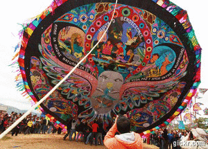
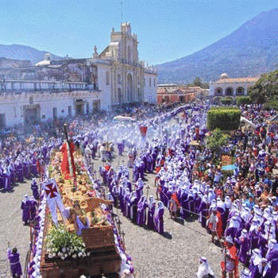
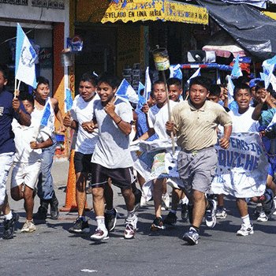
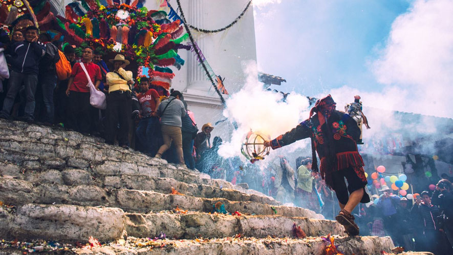

Hola!, Bienvenido al Rincon De las costumbres de Guatemala.

¿Cuales Son las Tradiciones y Costumbres de Guatemala?
Las costumbres son el conjunto de cualidades o inclinaciones y usos que forman el carácter distintivo de un pueblo o grupo humano. La costumbre implica siempre cierta idea de valor o, al menos, de conveniencia para el grupo, mientras que la tradición es simplemente un uso social “obligatorio”.
Guatemala es un país rico en costumbres y tradiciones que se han pasado de generación en generación. La mezcla de culturas ha tenido como resultado una gran variedad de actividades propias del país que se celebran a través del año. Guatemala tiene tantas tradiciones que enamoran tanto a locales como turistas gracias a sus atractivos, sus colores, la música y el ambiente. ¿Estás listo para conocer cinco de las más impresionantes costumbres y tradiciones de la Ciudad de Guatemala?

Conoce las más alegres costumbres y tradiciones de la Ciudad de Guatemala
1. Semana Santa
2. Quema del Torito
3. Danza de los Moros
4. Festival de Santiago de Barriletes gigantes
5. Las Posadas(Centro Historico)
1. Semana Santa
La Semana Santa es una de las más reconocidas tradiciones guatemaltecas a nivel nacional e internacional. Durante toda una semana, miles de guatemaltecos se reúnen para visitar altares religiosos, hacer alfombras con aserrín de diferentes colores y a ver las procesiones que se hacen a través de todo el país. Aquí se respira un ambiente familiar y de mucha devoción en donde los colores, olores y sabores típicos de la semana enamoran a todos. En la Ciudad de Guatemala, específicamente en el centro histórico, encontrarás todas estas tradiciones durante la Semana Santa que no puedes perderte.
Aprecia lo hermoso de este video:
2. Quema del torito
La quema del torito es parte de las tradiciones de la cultura de la Ciudad de Guatemala y es celebrada varias veces durante todo el año. Este torito es hecho a mano con papel de colores, alambre y se envuelve en juegos pirotécnicos. La quema del torito se hace usualmente enfrente de las iglesias, y dentro del torito se coloca a una persona que baila mientras los juegos pirotécnicos están encendidos. Esta tradición se originó después de la época de la conquista española como celebración de la llegada de este tipo de pirotecnia al país, y hasta el día de hoy no se ha dejado de celebrar. Si buscas una tarde llena de emoción, color y cultura guatemalteca, ¡no busques más que la quema del torito!
Mira en el siguiente video de la quema del torito:
3. Danza de los Moros
Continuamos nuestra lista de costumbres y tradiciones de Guatemala con una de las más alegres actividades guatemaltecas: la danza de los moros. Esta alegre tradición se realiza en diferentes departamentos del país incluyendo la Ciudad de Guatemala en zona 1 durante diferentes fechas. La danza de moros y cristianos cuenta la historia de la batalla entre los moros y cristianos en España. Lo llamativo de la danza está en las prendas que utilizan los bailarines para representar a los personajes. Reconocerás a los cristianos españoles por sus máscaras con barba y ropa llamativa. En cambio, los moros tienen mascaras oscuras, turbantes y telas que les cubren el rostro.
En el siguiente video podrás ver con más detalle el baile de los moros:
4. Festival de Santiago de barriletes gigantes
El Día de los Muertos no sólo involucra visitas al cementerio y el famoso fiambre en Guatemala. Otra de las tradiciones más populares del país el 1 de noviembre es ir al Festival de Santiago para ver sus impresionantes barriletes gigantes. La tradición se basa en que estos enormes barriletes de hasta 16 metros de diámetro ahuyentan a los malos espíritus y, cuando el evento termina por la tarde, los queman para que el humo guíe a las almas perdidas. Es tanta la importancia de este festival de barriletes gigantes que hay competencias y cada año el tema de sus diseños es diferente. El festival empieza desde las 4 de la mañana por lo que puedes aprovechar la opción de programar tu viaje con Uber para llegar a tiempo y no perderte ni un segundo del evento.
Observa en este video más de cerca este maravilloso festival:
5. Las posadas
Nuestra última tradición forma parte importante de las costumbres de Guatemala en diciembre. Antes de navidad, si estás en Guatemala, podrás presenciar diferentes procesiones acompañadas por familias y grupos de amigos mientras cantan villancicos y canciones locales. El propósito de las posadas es que, las procesiones puedan pedir posada en diferentes casas donde los reciben con tamales y atol de elote hasta la media noche. Las posadas son un evento especial que puedes encontrar en tantas partes del centro histórico, al igual que en sectores residenciales de la ciudad.
Como ves, la cultura de la Ciudad de Guatemala es tan importante y variada que podrás encontrar un sinfín de actividades típicas llenas de cultura que te encantarán. Cada una tiene una historia y propósito detrás que los guatemaltecos se esfuerzan año tras año para mantener vivo. Ahora que ya conoces cinco costumbres y tradiciones de Guatemala, solo te toca decidir cuál quieres vivir por ti mismo. ¿Lo mejor de todo? Es que con sólo descargar la app de Uber y dar unos cuantos clics, podrás empezar tu nueva aventura.
Observa en el siguiente video la hermosa tradicion:
↓↓↓Quieres volver a la pagina de turismo de Guatemala↓↓↓